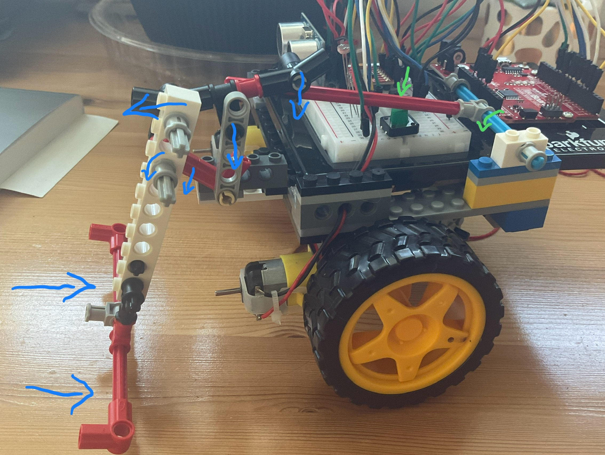

Arduino Solar Robot

Project Information:
- Built in 2024 as a final Robotics and Embedded Programming course.
- Robot was built to find optimal solar conditions for plant growth.
- Gained experience working with robotics, circuitry, sensors, and motors.
- Utilized mechatronics understanding to create physical actuators.
- Many iterations of the robot actuators created (See pagge 23 of Project Report below)